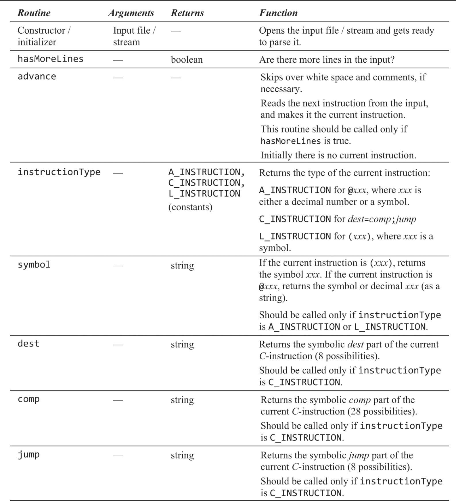
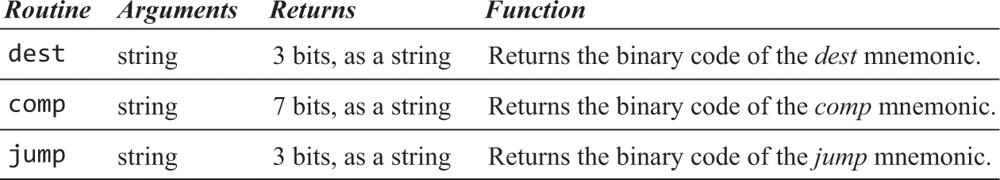
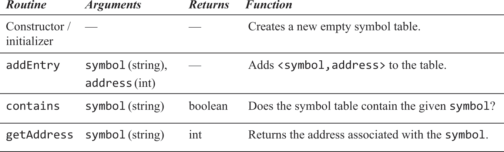

汇编器
概述
-
目的：将构造的易于编写的汇编语法翻译为可被计算机执行的机器指令。
-
为了支持使用标签代替指令地址，常见解决方案是读取两遍汇编源码，第一遍将标签添加到符号表且不生成任何指令，第二遍根据符号表生成指令。
-
初始化：将所有内置符号及其数字值写到符号表
-
第一次读取：逐行读取汇编源码，从0开始记录指令地址。每当遇到A/C指令时地址才+。遇到L指令时，将这个符号与下一个的A/C指令地址绑定并添加到符号表。
-
第二次读取：逐行读取汇编源码，如果遇到了引用符号的A指令，查找符号表用数字值代替这个符号后翻译为机器指令。如果符号表中不存在，那表示它是一个 变量定义，本例中的变量都被依次绑定到[RAM[16], ++)，将其和内存地址绑定并添加到符号表后翻译为机器指令。如果遇到C指令，将各部分翻译为二进制串 和111前缀按顺序合并为机器指令。
-
本例机器语言的语法设计图

习题
· 代码位于https://github.com/woieha320r/nand2tetris/tree/main/Assembler/src/com/example/assembler
解析器模块。用于分解汇编源码。

代码模块。用于将汇编源码转为对应的二进制码。

符号表模块。用于支持处理符号。

汇编器：按照概述的处理方式，在asm文件目录生成一个hack文件。
· 方法调用即汇编中的goto至某标签（汇编地址）继续执行，如果goto的地址位于另一个汇编文件则方法调用无法发生，所以需要将多个汇编文件转成一个hack 文件，使用统一的地址索引。这个过程被称为“链接”，书中的思想是"静态链接"：在编译时把所有用到的指令都拷贝到同一个可执行文件并重新计算地址。
· 另一种思想是"动态链接"，即把链接过程延后到加载时或运行时，它不仅减少可执行文件的磁盘占用，也减少加载后的内存占用，因为不同进程可共用同一份被 加载到内存中的库。对于加载时动态链接：不再将库代码复制到可执行文件里，而是在引用了外部代码/符号的地方打上标记。如果要运行程序的话，在将可执行文件加载到内存后，检查其依赖的库，把库 代码也加载到内存，然后执行链接过程。而运行时动态链接甚至都没有调用外部代码的标记，需要程序员在写源码时声明此处在运行时调用外部代码。